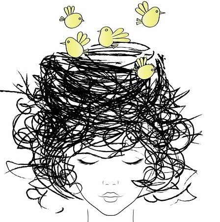

| Atsushi Fujisawa |  |
| digitalstage Inc. | Front End Engineer |
| GitHub | https://github.com/f-a24 |
最近、フロントエンド（というかJavaScript）界隈で
メジャーになりつつあるTypeScriptを
紹介出来たらなと思います
Node.jsをインストール
↓npm i -g typescript
↓index.ts作る
↓tsc index.ts
↓index.jsが出来あがる！
余談
Node.jsの作者（Ryan Dahl）がDenoという
TypeScript版Node.jsを開発中なので
興味がある方は是非…
オンラインエディタで試す
明らかに決まっているのであれば型推論してくれるため、
型指定は必要なし
const hoge = 'lovelive is forever!!'; let foo = 'lovelive is forever!!'; // hoge: 'lovelive is forever!!' // foo: string
決まっていなければ型指定する
function fn1(bar: string) {
console.log(bar + 'is lovelive');
}
基本的な型
// Boolean let isDone: boolean = false; // Number let decimal: number = 6; let hex: number = 0xf00d; let binary: number = 0b1010; let octal: number = 0o744; // String let color: string = "blue"; // Array let list: number[] = [1, 2, 3]; let list: Array<number> = [1, 2, 3];
// Any（出来る限り使わないでね♪）
let notSure: any = 4;
notSure = "maybe a string instead";
notSure = false;
// Void
function warnUser(): void {
console.log("This is my warning message");
}
let unusable: void = undefined;
// Null and Undefined
let u: undefined = undefined;
let n: null = null;
// Object
function create(o: object) {
console.log("This is my warning message");
}
create({ prop: 0 });
create(42); // エラー
// Tuple
let x: [string, number];
x = ["hello", 10];
// x = [10, "hello"]; // エラー
// Enum
enum Color {Red, Green, Blue}
let c: Color = Color.Green;
/* Color: { 0: "Red", 1: "Green", 2: "Blue",
Blue: 2, Green: 1, Red: 0 }
c: 1
*/
// Never
function error(message: string): never {
throw new Error(message);
}
非プリミティブ型を定義することも可能
type hogeType = {
a: number,
b: string
}
interface IHoge {
a: number;
b: string;
}
let hoge: hogeType;
let iHoge: IHoge;
Q. 非プリミティブ型を定義する際にtypeとinterfaceの違いは？
A. あんまり無いので自分はtype使ってる
object -> type 既存型定義の拡張やClass -> interface
論理演算子も使える
type aType = { a: number };
type bType = { b: string };
let hoge: aType & bType;
hoge = { a: 1, b: 'hoge' };
// hoge = { a: 1 }; エラー
let foo: aType | bType;
hoge = { a: 1 };
hoge = { a: 1, b: 'hoge' };
// hoge = { a: 'hoge', b: 1 }; エラー
let bar: string | number;
bar = 'foo';
bar = 1;
// bar = true; エラー
注意：キャストしなきゃいけいない場合も
let foo: string | number;
function fn(bar?: string) { // ? = 引数なしでも大丈夫
console.log(bar);
}
// foo(foo); エラー
fn(foo as string);
fn(<string>foo);
// htmlタグと混同するのでできるだけasの方使ってね
objectのkeyが動的な場合
const k = 'a';
const o = {
a: 'value'
}
o[k];
このままだとエラーになってしまうので
const k = 'a';
const o: {
[key: string]: string;
} = {
a: 'value';
}
o[k];
jQueryなどの有名なライブラリは大体、@types/jqueryのような形で型定義ファイルが
用意されているのでそれを使う
npm i -D @types/jquery
import jQuery from 'jquery';
let $hoge: jQuery<HTMLElement>;
$hoge = $('.hoge');
型定義の検索
型定義ないやつの対象方法
index.d.tsというファイルを作って↓のように書く
declear const hoge: any;
interface Window {
hoge: string;
}
interface jQuery {
hoge: (a: string) => jQuery
}
最後に
ﾓｰﾑﾘｰｲｷﾃｹﾅｰｲ
そんな時はany使っちゃいなよ